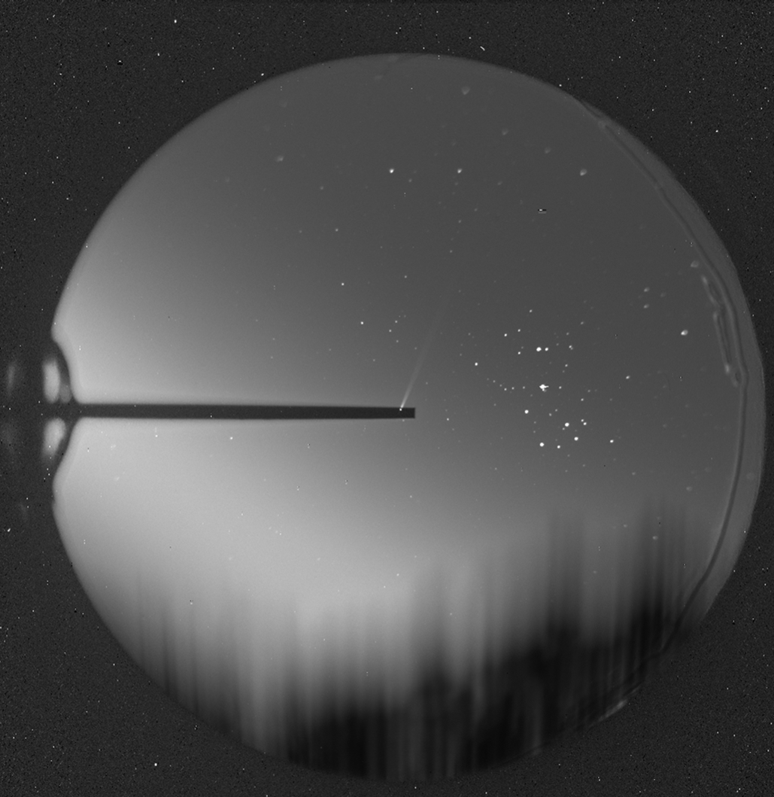
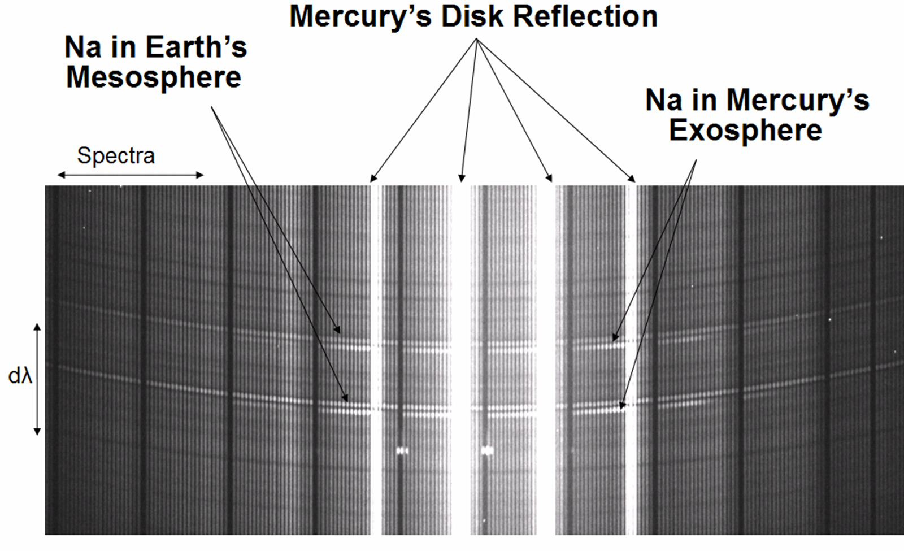
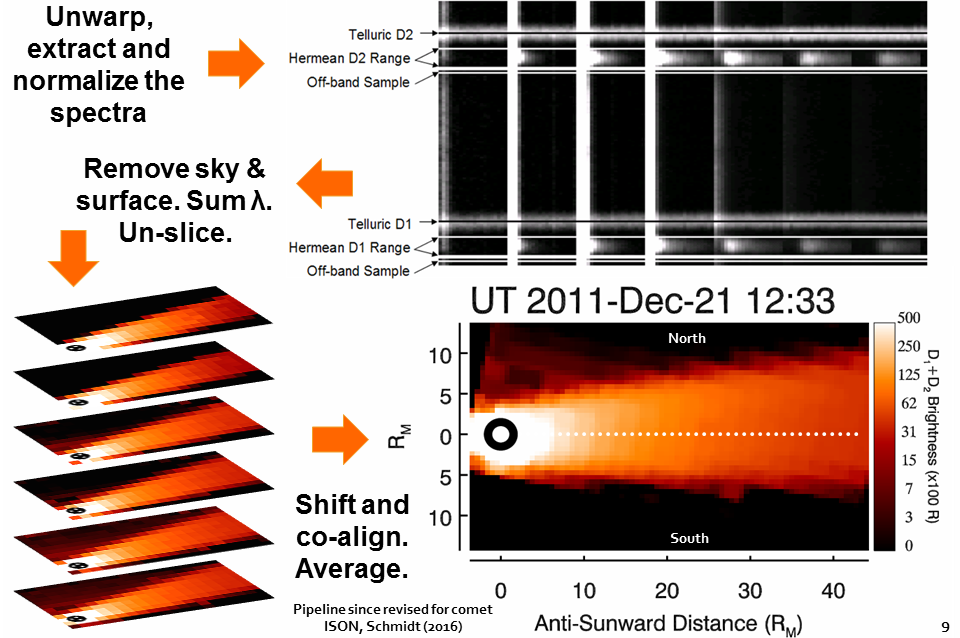

Gas in Mercury's atmosphere is so rarified that collisions between particles occur with negligible frequency. Like the atmospheres of Earth's Moon and Jupiter's moon, Europa, we refer to this as a surface-bound exosphere and it's an environment where the standard definitions of pressure and temperature do not apply. It's composition reflects the rocky surface material: calcium, magnesium, sodium, potassium, iron, aluminum, manganese, oxygen, as well as some elements that are brought in part from solar wind like hydrogen and helium. Photo-desorption, meteorite impacts, themal evaporation and sputtering are all processes that sustain a very thin atmosphere on this planet. For nearly 40 years, the community has debated the relative importance of each process on the different atmospheric constituents. Progress has been incremental with consensus being hard won, and many major resolutions have resulted from the MESSENGER spacecraft in 2011-2015.
Since solar photons impart momentum when they scatter off the atoms, sunlight blows Mercury's atmosphere into a comet-like tail. The photon scattering rate is particularly strong for alkali metals like sodium and potassium. Scattering depends on Mercury's Doppler shift and distance relative to the Sun, so the atmospheric escape rate is very dependent on season. Using a small 10 cm coronagraph at McDonald Observatory, I've recorded the sodium atmosphere extending to distances of 2.5 million km, making it one of the largest structures in our solar system. In the image below, the field of view is 7 degrees of sky, Mercury is behind the black filter strip, the Pleaides are to the right, and trees on the horizon are smeared by tracking during this 6 minute exposure.

Below is a movie of Mercury's comet-like tail as seen over 2 days aboard the HI-1 instrument on the Sun-orbiting STEREO-A spacecraft. The waves moving through the background are due to Thomson scattering of electrons in the solar wind. The tail shows characteristics common to sodium, although this prognosis in composition is not yet definite. Mercury's tail points nearly along the line of sight, whereas these solar wind structures scatter preferentially perpendicular. This means that the planet is in the foreground and the solar wind is in the background, and so my 'white whale' of observing the atmosphere react to solar activity is not acheivable by this technique.
McDonald Observatory is also home to a small 40 cm telescope with a fiber-fed instrument. To the best of my knowledge, it's the world's only integral-field echelle spectrograph, designed by Jeff Baumgardner of Boston University. This instrument simultaneously records 246 high resolution spectra over just 4 nm of free spectral range, where each is separated by 8 arcseconds on the sky. Optimizing the data reduction and calibration procedure has taken me nearly 8 years to get right and works like this:


Resultant images like the both right show on average about 30% higher colum density in the northern lobe of Mercury's sodium tail. Why the asymmetry? Mercury's magnetosphere! Mercury's magnetic field is not in the center of the planet, but about 500 km to the north. This allows the solar wind particles greater access to the southern surface. Normally when solar energetic particals hit a planet they cause things like aurorae. On Mercury, there's no substantial planetary atmosphere for them to collide with, so they just smack into the surface. The working theory is that they damage the surface, breaking bonds and making defects in grains of the topmost few hundred angstroms of soil. This "gardens" the surface, making it easier for ultra-violet sunlight to liberate fresh new atoms into the atmosphere. Real nerds call this ion-enhanced photon-stimulated desorption and it's more efficient in the southern hemisphere because the magnetosphere channels the sun's particles that direction. Once sodium atoms are in the atmosphere they get pushed around by sunlight and gravity. In the right mixture, they can actually drift into the northern lobe of the tail. Here's a simulation I cooked up.
I've also been observing asymmetries in the sodium and potassium tails with the 3.5 meter telescope at Apache Point Observatory in New Mexico. Combining those data with the tiny 40 cm, I'm hoping to pin down this effect down a bit better. On May 9th, I'll travel to the National Solar Observatory, just down the road from Apache Point, to point the Dunn Solar Telescope at the Sun while Mercury transits in front of it. We're hoping to observe some asymmetry in sodium absorption during this transit. North-south effects from the offset magnetosphere are hard to pull out of the MESSENGER dataset, but there's hints of dawn-dusk asymmetry and an analoguous drift. The solar transit data will tell us how lopsided the atmosphere is in both directions, an maybe even some changes over our 5 hour observation window... if it isn't cloudy and nothing breaks!
Updated 2016-04-27